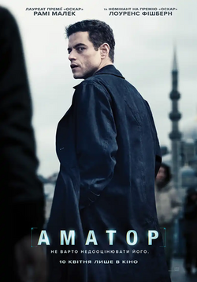

Вікові обмеження: 16+
Рік: 2025
Оригінальна назва: The Amateur
Режисер: Джеймс Гоувз (серіал «Кульгаві коні»)
Рейтинг глядачів: 6.7
Рейтинг критиків: 6.7
Мова: українська мова
Жанр: Бойовик, Трилер, Екшн
Тривалість: 2:13
Виробництво: США
Студія: 20th Century Studios
Сценарій: Гарі Спінеллі
Опис:
Життя Чарлі Геллера (Малек), геніального, але замкнутого в собі співробітника ЦРУ, змінюється назавжди після трагічної загибелі його дружини під час терористичного акту в Лондоні. Не отримавши підтримки від свого керівництва, він вирішує самостійно розкрити справу та вирушає у небезпечну подорож по всьому світу, щоб знайти винних. Його гострий розум – це єдина зброя, яка допомагає йому уникнути переслідувачів і здійснити помсту.